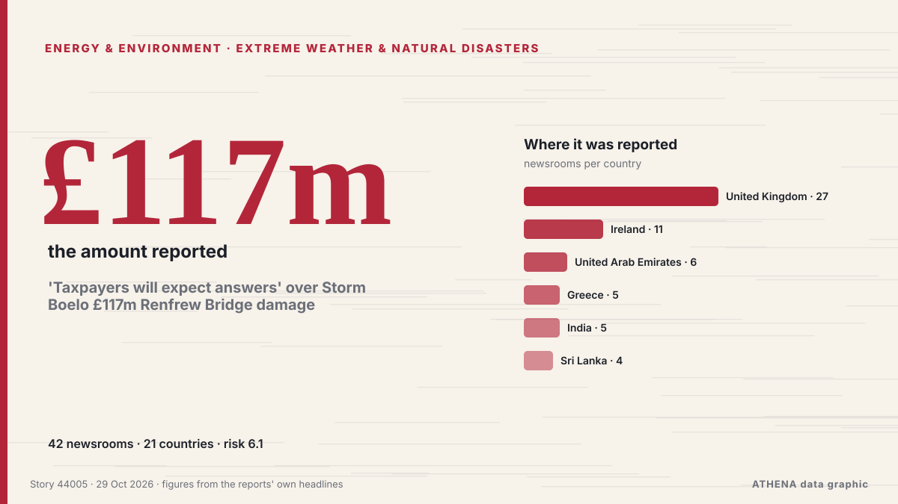

'Taxpayers will expect answers' over Storm Boelo £117m Renfrew Bridge damage

Winds as strong as 60km/h are forecast to sweep across the UAE this week. από Arabian Business
Αναφέρθηκε ανεξάρτητα από 42 μέσα σε 21 χώρες από τις 20 Οκτ, πρώτο από το Arabian Business· η κάλυψη εξασθενεί. Το ATHENA εκτιμά τον κίνδυνο υψηλό (6.1/10), κυρίως λόγω της σοβαρότητας της βλάβης που περιγράφεται και της γεωγραφικής και τομεακής εμβέλειάς του. Η βεβαιότητα είναι 87% (υψηλή), καθώς το επιβεβαιώνουν 42 ανεξάρτητα μέσα με μέση αξιοπιστία πηγών 71%.
Γιατί έχει σημασία: Οι εξελίξεις στην ενέργεια και τους πόρους επηρεάζουν τις τιμές καυσίμων και ρεύματος, την ασφάλεια εφοδιασμού και τους κλιματικούς στόχους.
Τι άλλαξε: 30 νέες αναφορές από 23 μέσα στο 24ωρο έως 29 Οκτ.
Πρώτη διατύπωση: Five counties under Orange warning during Storm Boelo
Οι τίτλοι των ειδήσεων παρουσιάζονται στα αγγλικά, όπως δημοσιεύτηκαν.
Με μια ματιά
Επιλέγεται, βαθμολογείται και γράφεται από τη δημοσιευμένη μεθοδολογία του ATHENA. Κανένας συντάκτης δεν παρεμβαίνει σε μεμονωμένα γεγονότα. Πώς παράγεται ›
| 20 Oct 08:26 UTC | 1 |
|---|---|
| 20 Oct 20:26 UTC | 1 |
| 21 Oct 08:26 UTC | 0 |
| 21 Oct 20:26 UTC | 0 |
| 22 Oct 08:26 UTC | 1 |
| 22 Oct 20:26 UTC | 0 |
| 23 Oct 08:26 UTC | 0 |
| 23 Oct 20:26 UTC | 3 |
| 24 Oct 08:26 UTC | 1 |
| 24 Oct 20:26 UTC | 0 |
| 25 Oct 08:26 UTC | 3 |
| 25 Oct 20:26 UTC | 1 |
| 26 Oct 08:26 UTC | 5 |
| 26 Oct 20:26 UTC | 9 |
| 27 Oct 08:26 UTC | 10 |
| 27 Oct 20:26 UTC | 7 |
| 28 Oct 08:26 UTC | 18 |
| 28 Oct 20:26 UTC | 11 |
| 29 Oct 08:26 UTC | 5 |
| 28 Oct 16:42 UTC | 6.0 |
|---|---|
| 30 Oct 09:36 UTC | 6.1 |
| 30 Oct 09:36 UTC | 6.1 |
Γιατί αυτοί οι αριθμοί
Σημασία
Κίνδυνος
Βεβαιότητα
Η κάλυψη — ποιος το ανέφερε και πότε
ο τίτλος όπως δημοσιεύτηκε · ανοίγει το πρωτότυπο- Arabian Business · Ηνωμένα Αραβικά Εμιράτα · United Arab EmiratesUAE weather: Rain and colder temperatures forecast this week
- Arabian Business · Ηνωμένα Αραβικά Εμιράτα · United Arab EmiratesUAE weather: Forecasters predict where rain will fall hardest this week amid thunderstorm warning
- Arabian Business · Ηνωμένα Αραβικά Εμιράτα · United Arab EmiratesDubai prepares for UAE rain forecast with 675 emergency staff and 1,100 machines
- RTÉ News · Ιρλανδία · IrelandFive counties under Orange warning during Storm Boelo
- Arabian Business · Ηνωμένα Αραβικά Εμιράτα · United Arab EmiratesUAE launch new platform as it targets $65bn in foreign investment by 2031
- The Irish News (Belfast) · Ηνωμένο Βασίλειο · United KingdomStorm Boelo: Thousands of homes without power and traffic disruption as high winds batter Northern Ireland
- Keep Talking Greece · Ελλάδα · GreeceGreece Weather Warning: Heavy rainfalls and thunderstorms
- IOL · Νότια Αφρική · South AfricaDozens of flights cancelled at Amsterdam airport due to strong winds
- The Local Sweden · Σουηδία · SwedenToday in Sweden: A roundup of the latest news on Monday
- The Irish News (Belfast) · Ηνωμένο Βασίλειο · United KingdomNew Northern Ireland weather warnings issued for high winds
- Evening Standard (London) · Ηνωμένο Βασίλειο · United KingdomEfforts continue to restore power after Storm Boelo amid further wind warnings
- Nation.Cymru · Ηνωμένο Βασίλειο · United KingdomThree flood warnings in Wales as further rain and strong winds approach
- The Portugal News · Πορτογαλία · PortugalAlgarve wind farm shows how to protect migrating birds
- Newsroom Panama · Παναμάς · PanamaHigh Waves and Winds in the Panamanian Pacific Until October 31. A Warning Issued By SINAPROC.
- The Herald (Scotland) · Ηνωμένο Βασίλειο · United KingdomStorm-hit Scots demand answers as flood damage sparks 'serious questions'
- TheJournal.ie · Ιρλανδία · Ireland'It wasn't a voluntary emigration': Patsy O'Sullivan was part of a generation who fled Ireland
- Manchester Evening News · Ηνωμένο Βασίλειο · United KingdomThe 10 'act now' flood warnings still in force across the North West tonight
- Free Malaysia Today · Μαλαισία · MalaysiaMalaysia’s Manjari makes her numbers count in Ireland
- Malay Mail · Μαλαισία · MalaysiaHeavy rain, high tides put Pulau Perhentian villagers on alert as monsoon season begins
- to vima · Ελλάδα · GreeceBad Weather to Persist in Greece Through Wednesday
- Mainichi (English) · Ιαπωνία · JapanSiemens to set up regional base for wind turbine maintenance in Hokkaido
- Daily Mirror · Σρι Λάνκα · Sri LankaSevere lightning advisory issued for Ampara and Batticaloa
- The Herald (Scotland) · Ηνωμένο Βασίλειο · United KingdomRail route disrupted after high winds hit vital bridge
- The Herald (Scotland) · Ηνωμένο Βασίλειο · United KingdomHigh winds bring disruption to road, rail and ferries as flooding risk rises
- RTÉ News · Ιρλανδία · IrelandNo single answer to geo-blocking TV content in NI - Ofcom
- Arabian Business · Ηνωμένα Αραβικά Εμιράτα · United Arab EmiratesUAE weather: Rain forecast until Friday
- The Hindu · Ινδία · IndiaRivers in north Andhra under watch amid cyclone-triggered rains
- OC Media · Γεωργία · GeorgiaInstallation of six wind turbines completed at Vento Energy’s 43.2 MW Breti Wind Power Project
- The Herald (Scotland) · Ηνωμένο Βασίλειο · United KingdomHistoric golf club submerged after Storm Boelo as damage 'difficult to imagine'
- Phys.org · Ηνωμένο Βασίλειο · United KingdomScientists reveal the staggering number of bat deaths at wind turbines
- The Rio Times · Βραζιλία · BrazilPeru Red Rain Alert as River Hits 30 Homes
- Belfast Telegraph · Ηνωμένο Βασίλειο · United KingdomNature recovery plan launched amid Northern Ireland biodiversity decline
- The Irish News (Belfast) · Ηνωμένο Βασίλειο · United KingdomNature recovery plan launched amid Northern Ireland biodiversity decline
- The Island · Σρι Λάνκα · Sri LankaSeveral spells of showers will occur in the Western, Sabaragamuwa provinces and in Kandy, Nuwara-Eliya, Galle and Matara districts
- China Daily — page reader · Κίνα · ChinaEU's marine biodiversity plans face challenges
- Cyprus Mail · Κύπρος · CyprusThunderstorms, hail and gale force winds batter Cyprus as low barometric engulfs island
- Daily Mirror · Σρι Λάνκα · Sri LankaLightning alert for Eastern areas
- Irish Independent · Ιρλανδία · IrelandBank of Ireland raises income forecast as lending grows by €3.6bn
- Cyprus Mail · Κύπρος · CyprusStorms cause power outages in Larnaca and Limassol
- Hindustan Times · Ινδία · IndiaThree killed by storm in southern India